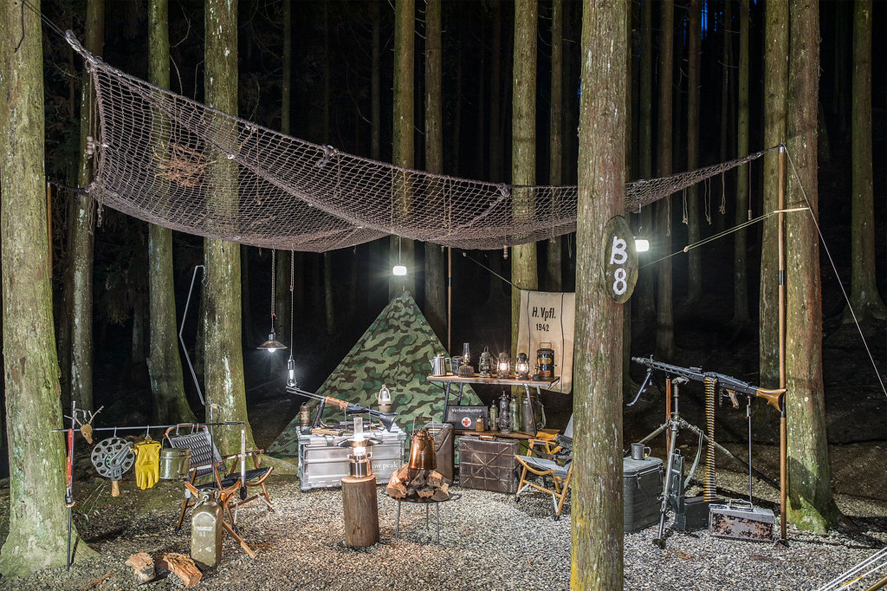
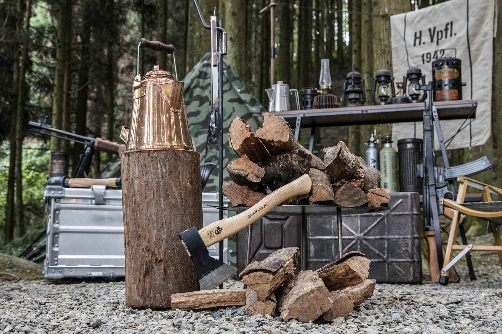

CAMPING
CAMPING戈巴侖露營區
駛入蜿蜒的鄉間小徑， 遠離塵囂與感受寧靜的自然美景。 森林步道感受杉林芬多精的滋潤、蟲鳴鳥叫的交響樂，體驗山林的奇妙旅程。

駛入蜿蜒的鄉間小徑， 遠離塵囂與感受寧靜的自然美景。 森林步道感受杉林芬多精的滋潤、蟲鳴鳥叫的交響樂，體驗山林的奇妙旅程。

駛入蜿蜒的鄉間小徑， 遠離塵囂與感受寧靜的自然美景。 森林步道感受杉林芬多精的滋潤、蟲鳴鳥叫的交響樂，體驗山林的奇妙旅程。

駛入蜿蜒的鄉間小徑， 遠離塵囂與感受寧靜的自然美景。 森林步道感受杉林芬多精的滋潤、蟲鳴鳥叫的交響樂，體驗山林的奇妙旅程。
【關於戈巴侖露營區】
駛入蜿蜒的鄉間小徑，遠離塵囂與感受寧靜的自然美景。森林步道感受杉林芬多精的滋潤、蟲鳴鳥叫的交響樂，體驗山林的奇妙旅程。
【營區位置】
新竹縣五峰鄉竹林村和平156號
座標：Ｎ: 24.619076 ，Ｅ:121.116712
營主聯絡方式：0975595131 ， Line之ID：uyang361022 。
【營業時間】
進場時間：當日中午13:00以後
退場時間：次日中午12：00以前
(若不清楚預約帳位之入營時間，可以電訊至本營區詢問)
新竹五峰戈巴侖露營區，擁有夢幻的杉木森林營位，
加上木棧板及雨棚區全區僅24個營位（7/1後減為21個），
旁邊還有輕鬆好走的瞭望台步道；享受了在大自然中簡單、純粹的露營生活，
身心露都被療瘉了！
駛入蜿蜒的鄉間小徑， 遠離塵囂與感受寧靜的自然美景。 森林步道感受杉林芬多精的滋潤、蟲鳴鳥叫的交響樂，體驗山林的奇駛入蜿蜒的鄉間小徑， 遠離塵囂與感受寧靜的自然美景。 森林步道感受杉林芬多精的滋潤、蟲鳴鳥叫的交響樂，體驗山林的奇駛入蜿蜒的鄉間小徑， 遠離塵囂與感受寧靜的自然美景。 森林步道感受杉林芬多精的滋潤、蟲鳴鳥叫的交響樂，體驗山林的奇駛入蜿蜒的鄉間小徑， 遠離塵囂與感受寧靜的自然美景。 森林步道感受杉林芬多精的滋潤、蟲鳴鳥叫的交響樂，體驗山林的奇駛入蜿蜒的鄉間小徑， 遠離塵囂與感受寧靜的自然美景。 森林步道感受杉林芬多精的滋潤、蟲鳴鳥叫的交響樂，體驗山林的奇駛入蜿蜒的鄉間小徑， 遠離塵囂與感受寧靜的自然美景。 森林步道感受杉林芬多精的滋潤、蟲鳴鳥叫的交響樂，體驗山林的奇
駛入蜿蜒的鄉間小徑， 遠離塵囂與感受寧靜的自然美景。 森林步道感受杉林芬多精的滋潤、蟲鳴鳥叫的交響樂，體驗山林的奇駛入蜿蜒的鄉間小徑， 遠離塵囂與感受寧靜的自然美景。 森林步道感受杉林芬多精的滋潤、蟲鳴鳥叫的交響樂，體驗山林的奇駛入蜿蜒的鄉間小徑， 遠離塵囂與感受寧靜的自然美景。 森林步道感受杉林芬多精的滋潤、蟲鳴鳥叫的交響樂，體驗山林的奇駛入蜿蜒的鄉間小徑， 遠離塵囂與感受寧靜的自然美景。 森林步道感受杉林芬多精的滋潤、蟲鳴鳥叫的交響樂，體驗山林的奇駛入蜿蜒的鄉間小徑， 遠離塵囂與感受寧靜的自然美景。 森林步道感受杉林芬多精的滋潤、蟲鳴鳥叫的交響樂，體驗山林的奇駛入蜿蜒的鄉間小徑， 遠離塵囂與感受寧靜的自然美景。 森林步道感受杉林芬多精的滋潤、蟲鳴鳥叫的交響樂，體驗山林的奇
駛入蜿蜒的鄉間小徑， 遠離塵囂與感受寧靜的自然美景。 森林步道感受杉林芬多精的滋潤、蟲鳴鳥叫的交響樂，體驗山林的奇駛入蜿蜒的鄉間小徑， 遠離塵囂與感受寧靜的自然美景。 森林步道感受杉林芬多精的滋潤、蟲鳴鳥叫的交響樂，體驗山林的奇駛入蜿蜒的鄉間小徑， 遠離塵囂與感受寧靜的自然美景。 森林步道感受杉林芬多精的滋潤、蟲鳴鳥叫的交響樂，體驗山林的奇駛入蜿蜒的鄉間小徑， 遠離塵囂與感受寧靜的自然美景。 森林步道感受杉林芬多精的滋潤、蟲鳴鳥叫的交響樂，體驗山林的奇駛入蜿蜒的鄉間小徑， 遠離塵囂與感受寧靜的自然美景。 森林步道感受杉林芬多精的滋潤、蟲鳴鳥叫的交響樂，體驗山林的奇駛入蜿蜒的鄉間小徑， 遠離塵囂與感受寧靜的自然美景。 森林步道感受杉林芬多精的滋潤、蟲鳴鳥叫的交響樂，體驗山林的奇
交通指引
由中油竹東加油站上縣道122號約18公里,
上山前記得在伍聯社或全聯超市補貨,
沿途路況良好,沒有蜿蜒山路,儘最後300公尺道路較窄.
而且秋冬夜晚易有濃霧，夜衝的朋友要注意.
使用 Google 導航的朋友要小心，南清公路轉羅平道路的地方,
Google 導航會叫你提早轉抄近路，但那條路十分狹窄,
建議南清公路要走到快到(還沒到)台亞石油五峰加油站前的叉路再轉.
駛入蜿蜒的鄉間小徑， 遠離塵囂與感受寧靜的自然美景。 森林步道感受杉林芬多精的滋潤、蟲鳴鳥叫的交響樂，體驗山林的奇駛入蜿蜒的鄉間小徑， 遠離塵囂與感受寧靜的自然美景。 森林步道感受杉林芬多精的滋潤、蟲鳴鳥叫的交響樂，體驗山林的奇駛入蜿蜒的鄉間小徑， 遠離塵囂與感受寧靜的自然美景。 森林步道感受杉林芬多精的滋潤、蟲鳴鳥叫的交響樂，體驗山林的奇駛入蜿蜒的鄉間小徑， 遠離塵囂與感受寧靜的自然美景。 森林步道感受杉林芬多精的滋潤、蟲鳴鳥叫的交響樂，體驗山林的奇駛入蜿蜒的鄉間小徑， 遠離塵囂與感受寧靜的自然美景。 森林步道感受杉林芬多精的滋潤、蟲鳴鳥叫的交響樂，體驗山林的奇駛入蜿蜒的鄉間小徑， 遠離塵囂與感受寧靜的自然美景。 森林步道感受杉林芬多精的滋潤、蟲鳴鳥叫的交響樂，體驗山林的奇
駛入蜿蜒的鄉間小徑， 遠離塵囂與感受寧靜的自然美景。 森林步道感受杉林芬多精的滋潤、蟲鳴鳥叫的交響樂，體驗山林的奇駛入蜿蜒的鄉間小徑， 遠離塵囂與感受寧靜的自然美景。 森林步道感受杉林芬多精的滋潤、蟲鳴鳥叫的交響樂，體驗山林的奇駛入蜿蜒的鄉間小徑， 遠離塵囂與感受寧靜的自然美景。 森林步道感受杉林芬多精的滋潤、蟲鳴鳥叫的交響樂，體驗山林的奇駛入蜿蜒的鄉間小徑， 遠離塵囂與感受寧靜的自然美景。 森林步道感受杉林芬多精的滋潤、蟲鳴鳥叫的交響樂，體驗山林的奇駛入蜿蜒的鄉間小徑， 遠離塵囂與感受寧靜的自然美景。 森林步道感受杉林芬多精的滋潤、蟲鳴鳥叫的交響樂，體驗山林的奇駛入蜿蜒的鄉間小徑， 遠離塵囂與感受寧靜的自然美景。 森林步道感受杉林芬多精的滋潤、蟲鳴鳥叫的交響樂，體驗山林的奇